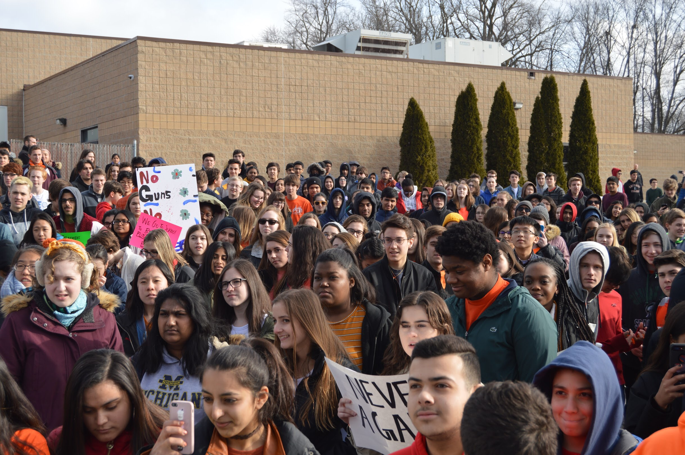
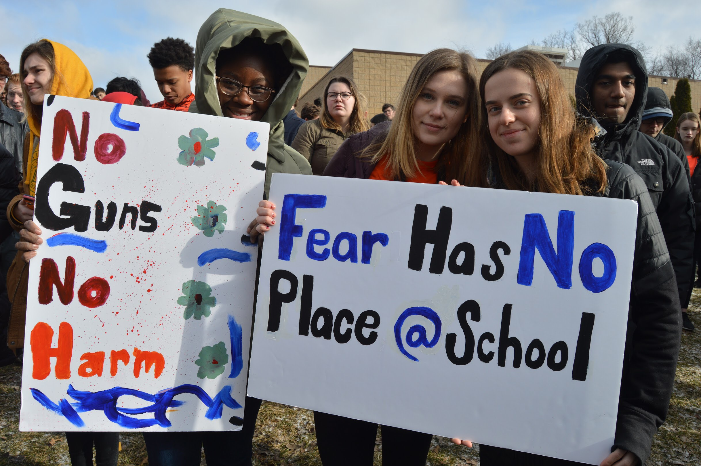
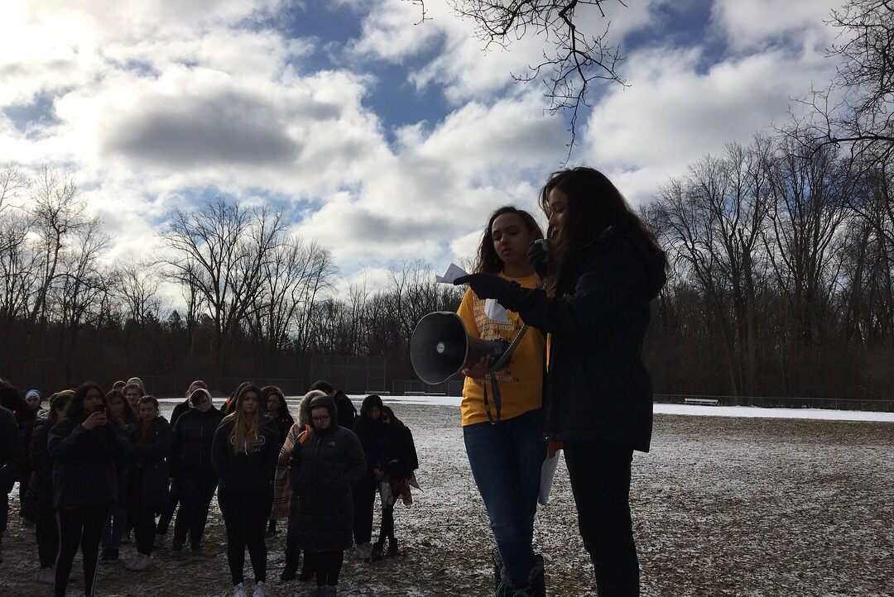
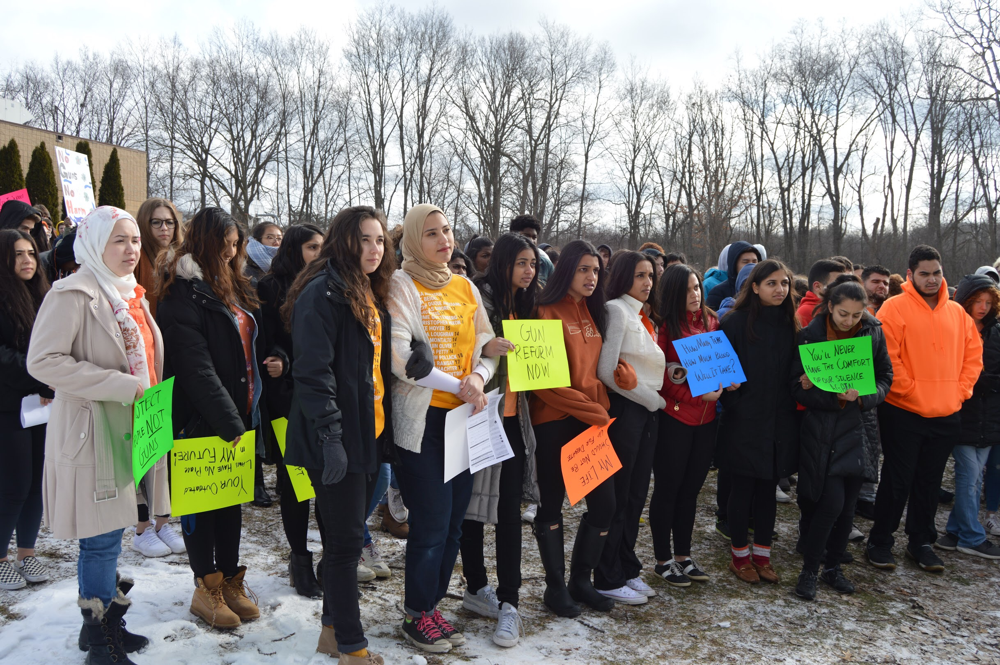
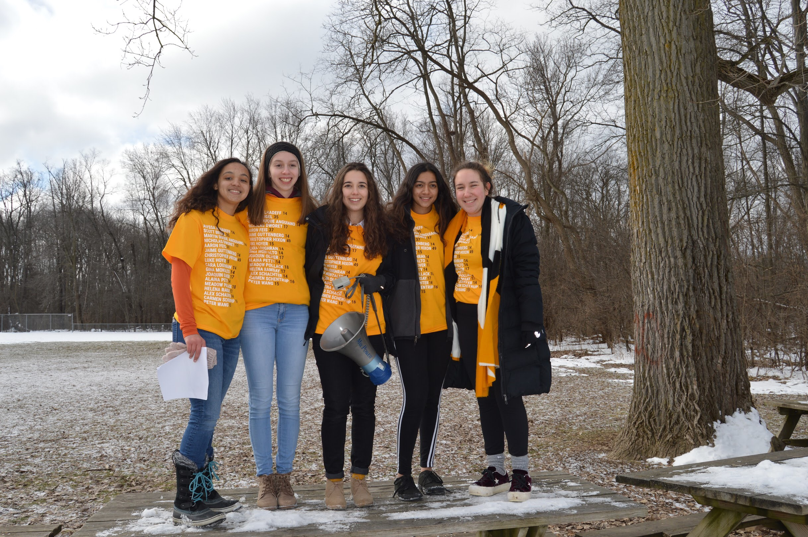

Upcoming Events:
May 8th, 2018
Martin Brook Meet and Greet
Martin Brook Meet and Greet
On March 8th, people will have the opportunity to attend a meet and greet for candidate Martin Brook, who is running for the House in MI-09 to replace the retiring Rep. Sandy Levin. Participants will have a chance to ask questions and address concerns, plus will be able to get to know the candidate and his policies better. The event will be hosted at the Bloomfield Hills Public Library, located at Lone Pine and Telegraph.
Past Events:
May 1st, 2018
Haley Stevens Meet and Greet
Students from the Oakland County Area met on the 1st with Haley Stevens to hear about her beliefs and policies. Stevens is a Democrat who is currently running for Representative of MI-11, a seat currently occupied by the retiring Dave Trott (R-MI)
April 20th, 2018
National School Walkout
On April 20th, students accross the nation walked out of school to protest a lack of progress in gun-related legislation that is so desperately needed. Engage 18 partnered with the students of Royal Oak High School to host an event that drew students from accross Michigan, along with figures such as Rep. Levin, who currently serves in the House for MI-09.
April 11th, 2018
Suneel Gupta Meet and Greet
Students from the Oakland County Area met on the 11th with Suneel Gupta to hear about his beliefs and policies. Gupta is a Democrat who is currently running for Representative of MI-11, a seat currently occupied by the retiring Dave Trott (R-MI)
March 30th, 2018
Amicus Curiae
On March 30th, Engage 18 filed an amicus brief with the Supreme Court of Michigan on the case Michigan Gun Owners, inc. v Ann Arbor Public Schools. This case will determine if schools are permitted to prevent the carrying of weapons on their property. The Court heard arguments on April 11th, and are expected to release their decision soon. This document, which you can find here, contains a number of statements produced by students on the effect guns in schools, and highlights the need for schools to be able to prevent strange individuals from open-carrying weapons on their property.
March 24th, 2018
March For Our Lives
Engage 18 members travelled by bus to DC, participating in the March For Our Lives with students accross Michigan and accross the country.
March 15th, 2018
Voter registration
On March 15th, members of Engage 18 worked with the Political Awareness Club of Bloomfield Hills High School to register 140 eligible students. This service was available at all lunch periods.
March 14th, 2018
National Walkout


- 
- 
- 
- 
- 
Students across the country participated in a walkout to honor those lost in the tragic Parkland shooting and to advocate for stricter gun control laws. Pictured above are walkouts at Bloomfield Hills High School and the International Academy, each of which were organized by Engage 18 members.
March 11th, 2018
Gubernatorial Debate
On March 11th, Engage 18 hosted a Gubernatorial Debate between 3 Democratic candidates: Abdul El-Sayed, Shri Thanedar, and Bill Cobbs. The debate was free to attend, and boasted an estimated crowd of 500 people. Questions were drawn from the community, and candidates were alloted time to help inform voters about their policies. The full video of this event can be found here.
March 10th, 2018
Gun Panel
Members of Engage 18 were offered the chance to speak on a gun panel on the 10th, in a meeting that featured prominent local figures such as Sandy Levin. They used this opportunity to talk about student perspectives on gun control